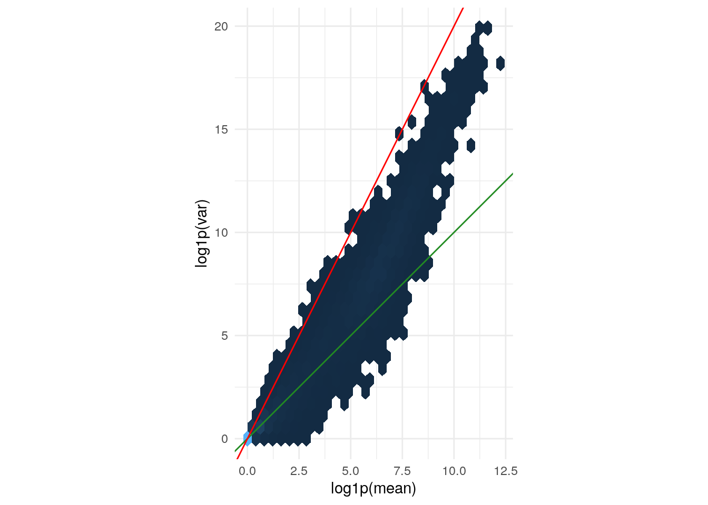
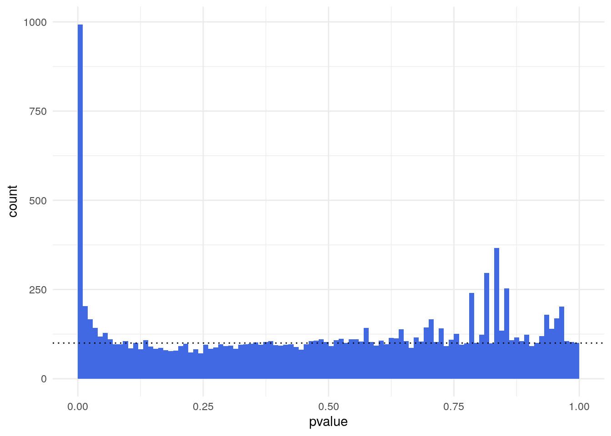
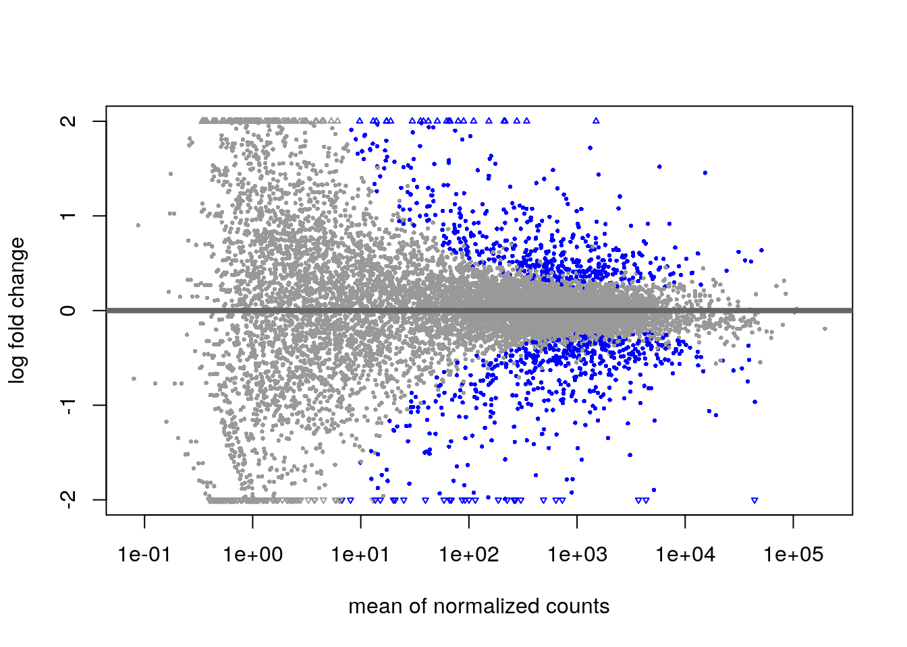
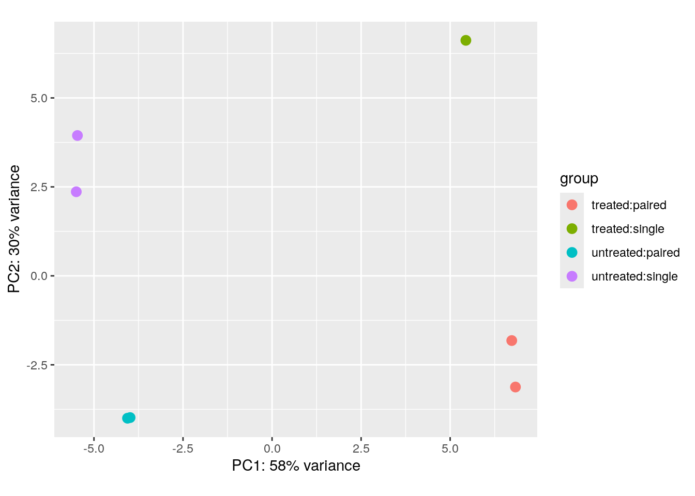
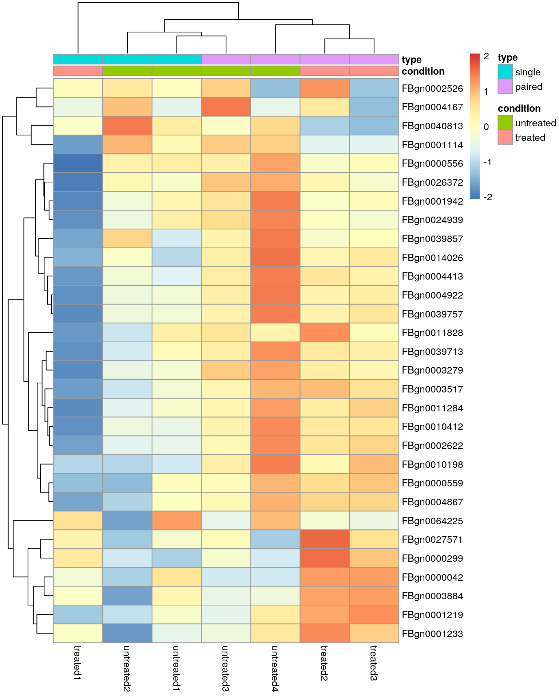

Last updated: 2024-08-06
Checks: 7 0
Knit directory: muse/
This reproducible R Markdown analysis was created with workflowr (version 1.7.1). The Checks tab describes the reproducibility checks that were applied when the results were created. The Past versions tab lists the development history.
Great! Since the R Markdown file has been committed to the Git repository, you know the exact version of the code that produced these results.
Great job! The global environment was empty. Objects defined in the global environment can affect the analysis in your R Markdown file in unknown ways. For reproduciblity it’s best to always run the code in an empty environment.
The command set.seed(20200712) was run prior to running
the code in the R Markdown file. Setting a seed ensures that any results
that rely on randomness, e.g. subsampling or permutations, are
reproducible.
Great job! Recording the operating system, R version, and package versions is critical for reproducibility.
Nice! There were no cached chunks for this analysis, so you can be confident that you successfully produced the results during this run.
Great job! Using relative paths to the files within your workflowr project makes it easier to run your code on other machines.
Great! You are using Git for version control. Tracking code development and connecting the code version to the results is critical for reproducibility.
The results in this page were generated with repository version 665782b. See the Past versions tab to see a history of the changes made to the R Markdown and HTML files.
Note that you need to be careful to ensure that all relevant files for
the analysis have been committed to Git prior to generating the results
(you can use wflow_publish or
wflow_git_commit). workflowr only checks the R Markdown
file, but you know if there are other scripts or data files that it
depends on. Below is the status of the Git repository when the results
were generated:
Ignored files:
Ignored: .Rhistory
Ignored: .Rproj.user/
Ignored: r_packages_4.3.3/
Ignored: r_packages_4.4.0/
Note that any generated files, e.g. HTML, png, CSS, etc., are not included in this status report because it is ok for generated content to have uncommitted changes.
These are the previous versions of the repository in which changes were
made to the R Markdown (analysis/deseq2.Rmd) and HTML
(docs/deseq2.html) files. If you’ve configured a remote Git
repository (see ?wflow_git_remote), click on the hyperlinks
in the table below to view the files as they were in that past version.
| File | Version | Author | Date | Message |
|---|---|---|---|---|
| Rmd | 665782b | Dave Tang | 2024-08-06 | Noise and replicates |
| html | 3a1d43a | Dave Tang | 2024-08-06 | Build site. |
| Rmd | 3738c6f | Dave Tang | 2024-08-06 | Multifactorial design |
| html | f4da2ce | Dave Tang | 2024-08-05 | Build site. |
| Rmd | 9293da5 | Dave Tang | 2024-08-05 | Visualisations after a DGE analysis |
| html | 365890e | Dave Tang | 2024-08-05 | Build site. |
| Rmd | 3780bfa | Dave Tang | 2024-08-05 | A basic DESeq2 analysis |
| html | 1383bf7 | Dave Tang | 2024-08-05 | Build site. |
| Rmd | d5e67bc | Dave Tang | 2024-08-05 | Getting started with DESeq2 |
DESeq2 is used to:
Estimate variance-mean dependence in count data from high-throughput sequencing assays and test for differential expression based on a model using the negative binomial distribution.
Install using BiocManager::install().
if (!require("BiocManager", quietly = TRUE))
install.packages("BiocManager")
BiocManager::install("DESeq2")We will use data from the pasilla package so install it too.
BiocManager::install("pasilla")Example dataset in the experiment data package {pasilla}.
fn <- system.file("extdata", "pasilla_gene_counts.tsv", package = "pasilla", mustWork = TRUE)
counts <- as.matrix(read.csv(fn, sep="\t", row.names = "gene_id"))
dim(counts)[1] 14599 7The matrix tallies the number of reads assigned for each gene in each sample.
tail(counts) untreated1 untreated2 untreated3 untreated4 treated1 treated2
FBgn0261570 3296 4910 2156 2060 5077 3069
FBgn0261571 0 0 0 0 1 0
FBgn0261572 4 13 4 11 7 3
FBgn0261573 2651 3653 1571 1612 3334 1848
FBgn0261574 6385 9318 3110 2819 10455 3508
FBgn0261575 6 53 1 3 42 3
treated3
FBgn0261570 3022
FBgn0261571 0
FBgn0261572 3
FBgn0261573 1908
FBgn0261574 3047
FBgn0261575 4Estimate size factors.
DESeq2::estimateSizeFactorsForMatrix(counts)untreated1 untreated2 untreated3 untreated4 treated1 treated2 treated3
1.1382630 1.7930004 0.6495470 0.7516892 1.6355751 0.7612698 0.8326526 Variance versus mean for the (size factor adjusted)
counts data. The axes are logarithmic. Also shown are lines
through the origin with slopes 1 (green) and 2 (red).
sf <- DESeq2::estimateSizeFactorsForMatrix(counts)
ncounts <- t(t(counts) / sf)
# untreated samples
uncounts <- ncounts[, grep("^untreated", colnames(ncounts)), drop = FALSE]
ggplot(
tibble(
mean = rowMeans(uncounts),
var = rowVars(uncounts)
),
aes(x = log1p(mean), y = log1p(var))
) +
geom_hex() +
coord_fixed() +
theme_minimal() +
theme(legend.position = "none") +
geom_abline(slope = 1:2, color = c("forestgreen", "red"))
| Version | Author | Date |
|---|---|---|
| 1383bf7 | Dave Tang | 2024-08-05 |
The green line is what we expect if the variance equals the mean, as is the case for a Poisson-distributed random variable. This approximately fits the data in the lower range. The red line corresponds to the quadratic mean-variance relationship \(v = m^2\). We can see that in the upper range of the data, the quadratic relationship approximately fits the data.
The {pasilla} data set is from an experiment on Drosophila melanogaster cell cultures that tested the effect of RNAi knockdown of the splicing factor pasilla on the cells’ transcriptome. There were two experimental conditions, termed untreated and treated in the column headers and they correspond to negative control and siRNA against pasilla. The experimental metadata of the seven samples in this dataset are loaded below.
annotationFile <- system.file("extdata", "pasilla_sample_annotation.csv", package = "pasilla", mustWork = TRUE)
pasillaSampleAnno <- readr::read_csv(annotationFile)Rows: 7 Columns: 6
── Column specification ────────────────────────────────────────────────────────
Delimiter: ","
chr (4): file, condition, type, total number of reads
dbl (2): number of lanes, exon counts
ℹ Use `spec()` to retrieve the full column specification for this data.
ℹ Specify the column types or set `show_col_types = FALSE` to quiet this message.pasillaSampleAnno# A tibble: 7 × 6
file condition type `number of lanes` total number of read…¹ `exon counts`
<chr> <chr> <chr> <dbl> <chr> <dbl>
1 treate… treated sing… 5 35158667 15679615
2 treate… treated pair… 2 12242535 (x2) 15620018
3 treate… treated pair… 2 12443664 (x2) 12733865
4 untrea… untreated sing… 2 17812866 14924838
5 untrea… untreated sing… 6 34284521 20764558
6 untrea… untreated pair… 2 10542625 (x2) 10283129
7 untrea… untreated pair… 2 12214974 (x2) 11653031
# ℹ abbreviated name: ¹`total number of reads`The dataset was produced in two batches, the first consisting of three sequencing libraries using single read sequencing and the second using using paired-end sequencing.
Create factors.
mutate(
pasillaSampleAnno,
condition = factor(condition, levels = c("untreated", "treated")),
type = factor(sub("-.*", "", type), levels = c("single", "paired"))
) -> pasillaSampleAnnoNote that the design is approximately balanced between the factor of
interest, condition, and the “nuisance factor”,
type.
with(pasillaSampleAnno, table(condition, type)) type
condition single paired
untreated 2 2
treated 1 2{DESeq2} uses DESeqDataSet objects and is an extension
of the SummarizedExperiment class in Bioconductor. We can
create a DESeqDataSet object using the constructor function
DESeqDataSetFromMatrix.
mt <- match(colnames(counts), sub("fb$", "", pasillaSampleAnno$file))
stopifnot(!any(is.na(mt)))
pasilla <- DESeqDataSetFromMatrix(
countData = counts,
colData = pasillaSampleAnno[mt, ],
design = ~ condition
)
class(pasilla)[1] "DESeqDataSet"
attr(,"package")
[1] "DESeq2"is(pasilla, "SummarizedExperiment")[1] TRUEAfter creating a DESeqDataSet we are ready to carry out
a differential expression analysis. The aim is to identify genes that
are differentially abundant between the treated and untreated cells. A
test that is conceptually similar to the t-test is used. A
choice of standard analysis steps are wrapped into a single function,
DESeq().
pasilla <- DESeq(pasilla)estimating size factorsestimating dispersionsgene-wise dispersion estimatesmean-dispersion relationshipfinal dispersion estimatesfitting model and testingThe DESeq() function is a wrapper that calls:
estimateSizeFactors for normalisationestimateDispersions for dispersion estimationnbinomWaldTest for hypothesis tests for differential
abundanceThe test is between the two levels untreated and
treated of the factor condition, since this is
what was specified in the design: design = ~ condition.
res <- results(pasilla)
res[order(res$padj), ] |> head()log2 fold change (MLE): condition treated vs untreated
Wald test p-value: condition treated vs untreated
DataFrame with 6 rows and 6 columns
baseMean log2FoldChange lfcSE stat pvalue
<numeric> <numeric> <numeric> <numeric> <numeric>
FBgn0039155 730.596 -4.61901 0.1687068 -27.3789 4.88599e-165
FBgn0025111 1501.411 2.89986 0.1269205 22.8479 1.53430e-115
FBgn0029167 3706.117 -2.19700 0.0969888 -22.6521 1.33042e-113
FBgn0003360 4343.035 -3.17967 0.1435264 -22.1539 9.56283e-109
FBgn0035085 638.233 -2.56041 0.1372952 -18.6490 1.28772e-77
FBgn0039827 261.916 -4.16252 0.2325888 -17.8965 1.25663e-71
padj
<numeric>
FBgn0039155 4.06661e-161
FBgn0025111 6.38497e-112
FBgn0029167 3.69104e-110
FBgn0003360 1.98979e-105
FBgn0035085 2.14354e-74
FBgn0039827 1.74316e-68The first step after a differential expression analysis is to visualise the following plots:
Histogram of p-values of a differential expression analysis.”
ggplot(as(res, "data.frame"), aes(x = pvalue)) +
geom_histogram(binwidth = 0.01, fill = "Royalblue", boundary = 0) +
geom_hline(yintercept = 100, lty = 3) +
theme_minimal()Warning: Removed 2241 rows containing non-finite outside the scale range
(`stat_bin()`).
| Version | Author | Date |
|---|---|---|
| f4da2ce | Dave Tang | 2024-08-05 |
The p-value distribution shows a uniform background (non-DE genes) with values between 0 and 1 and a peak of small p-values at the left (DE genes). The ratio of the level of the background to the height of the peak provides us with a rough indication of the false discovery rate (FDR) that would be associated with calling the genes in the leftmost bin differentially expressed.
In this case, the leftmost bin contains 993 genes and the background level (dotted line) is around 100, so the FDR associated with calling all genes in the leftmost bin would be around 10%.
table(res$pvalue < 0.01)
FALSE TRUE
11365 993 A background distribution that is not uniform, but shows a tilted shape with an increase towards the right, tends to indicate batch effects, that is, underlying systematic variation that makes replicates look more different than expected.
The {DESeq2} package can produce the MA plot.
plotMA(pasilla, ylim = c(-2, 2))
| Version | Author | Date |
|---|---|---|
| f4da2ce | Dave Tang | 2024-08-05 |
{DESeq2} also has a function plotPCA() that can produce
PCA plots. PC1 is mostly aligned with the experimental covariate of
interest (untreated/treated), while PC2 is
roughly aligned with the sequencing protocol
(single/paired).
# transform using regularised logarithm
pas_rlog <- rlogTransformation(pasilla)
plotPCA(pas_rlog, intgroup=c("condition", "type")) + coord_fixed()using ntop=500 top features by varianceCoordinate system already present. Adding new coordinate system, which will
replace the existing one.
| Version | Author | Date |
|---|---|---|
| f4da2ce | Dave Tang | 2024-08-05 |
Heatmap using the regularised logarithm (rlog) transformed data of the 30 most variable genes.
library("pheatmap")
wanted <- order(rowMeans(assay(pas_rlog)), decreasing = TRUE)[1:30]
pheatmap(
assay(pas_rlog)[wanted, ],
scale = "row",
annotation_col = as.data.frame(
colData(pas_rlog)[, c("condition", "type")]
)
)
| Version | Author | Date |
|---|---|---|
| f4da2ce | Dave Tang | 2024-08-05 |
Note the clustering of the sequencing protocol and this highlights that our differential expression analysis was probably too naive and that we should adjust for the “nuisance” factor.
Let’s assume that, in addition to the siRNA knockdown of the pasilla gene, we also want to test the effect of a certain drug. We would then envisage an experiment in which the experimenter treats the cells either with negative control, with the siRNA against pasilla, with the drug, or with both. To analyse this experiment, we can introduce the notation:
\[\begin{equation} y = \beta_0 + x_1 \beta_1 + x_2 \beta_2 + x_1 x_2 \beta_{12} \end{equation}\]
The left-hand size, \(y\), is the experimental measurement of interest, which in our case is the suitably transformed expression level of a gene. Since in an RNA-seq experiment there are lots of genes, we’ll have as many copies of the above equation, one for each.
The coefficient \(\beta_0\) is the base level of the measurement in the negative control; often it is called the intercept.
The design factors \(x_1\) and \(x_2\) are binary indicator variables: \(x_1\) takes the value 1 if the siRNA was transfected and 0 if not, and similarly, \(x_2\) indicates whether the drug was administered.
In the experiment where only where only the siRNA is used, \(x_1\) = 1 and \(x_2\) = 0, and the third and fourth terms of the equation vanish. The equation then simplifies to \(y = \beta_0 + \beta_1\). This means that \(\beta_1\) represents the difference between treatment and control. If our measurements are on a logarithmic scale, then:
\[ y = \beta_0 + \beta_1 \\ \beta_1 = y - \beta_0 = log_2(expression_{treated}) - log2(expression_{untreated}) \\ = log_2\frac{expression_{treated}}{expression_{untreated}} \]
is the logarithmic fold change due to treatment with the siRNA. In exactly the same way, \(\beta_2\) is the logarithmic fold change due to treatment with the drug.
If we treat the cells with both siRNA and drug, \(x_1\) = \(x_2\) = 1:
\[ y = \beta_0 + x_1 \beta_1 + x_2 \beta_2 + x_1 x_2 \beta_{12} \\ y = \beta_0 + \beta_1 + \beta_2 + \beta_{12} \\ \beta_{12} = y - (\beta_0 + \beta_1 + \beta_2) \]
This means that \(\beta_{12}\) is the difference between the observed outcome, \(y\), and the outcome expected from the individual treatments, obtained by adding to the baseline the effect of siRNA alone, \(\beta_1\), and of drug alone, \(\beta_2\).
We call \(\beta_{12}\) the interaction effect of siRNA and drug. It has nothing to do with a physical interaction: the terminology indicates that the effects of these two different experimental factors do not simply add up, but combine in a more complicated fashion. For instance, if the target of the drug and of the siRNA were equivalent, leading to the same effect on the cells, then we would biologically expect that \(\beta_1\) = \(\beta_2\). We would also expect that their combination has no further effect, so that \(\beta_{12}\) = \(-\beta_1\).
If, on the other hand, the targets of the drug and of the siRNA are in parallel pathways that can buffer each other, we would expect that \(\beta_1\) and \(\beta_2\) are both relatively small, but the combined effect is synergistic, and \(\beta_{12}\) is large.
We don’t always care about interactions. Many experiments are designed with multiple factors where we care most about each of their individual effects. In that case, the combinatorial treatment might not be present in the experimental design, and the model to use for the analysis is a version of the equation with the rightmost term removed.
We can succinctly encode the design of the experiment in the design matrix. The combinatorial experiment would be:
| \(x_0\) | \(x_1\) | \(x_2\) |
|---|---|---|
| 1 | 0 | 0 |
| 1 | 1 | 0 |
| 1 | 0 | 1 |
| 1 | 1 | 1 |
The columns of the design matrix correspond to the experimental factors, and its rows represent the different experimental conditions, four in this case. If the combinatorial treatment is not performed, then the design matrix is reduced to only the first three rows.
The equation:
\[\begin{equation} y = \beta_0 + x_1 \beta_1 + x_2 \beta_2 + x_1 x_2 \beta_{12} \end{equation}\]
provides a conceptual decomposition of the observed data into the effects caused by the different experimental variables. If our data (the \(y\)s) were absolutely precise, we could set up a linear system of equations, one equation for each of the four possible experimental conditions represented by the \(x\)s, and solve for the \(\beta\)s.
However real data is usually affected by noise and we need replicates to estimate the levels of noise and assess the uncertainty of our estimated \(\beta\)s. Only then can we empirically assess whether any of the observed changes between conditions are significantly larger than those occurring due just to experimental or natural variation. We extend the equation to:
\[ y_j = x_{j0} \beta_0 + x_{j1} \beta_1 + x_{j2} \beta_2 + x_{j1} x_{j2} \beta_{12} + \epsilon_j \]
We have included the index \(j\) and a new term \(\epsilon_j\). The index \(j\) now explicitly counts over our individual replicate experiments; for example, if for each of the four conditions we perform three replicates, then \(j\) counts from 1 to 12. The design matrix now has 12 rows, and \(x_{jk}\) is the value of the matrix in its \(j\)th row and \(k\)th column.
The additional terms \(\epsilon_j\), which we call the residuals, are there to absorb differences between replicates. However, one additional modeling component is needed: the system of 12 equations would be underdetermined without further information, since it now has more variables (12 \(\epsilon\)s and four \(\beta\)s) than it has equations (12, one for each \(j\)). To address this, we require that the \(\epsilon_j\) be small. One popular way to overcome this is to minimise the sum of squared residuals,
\[ \sum_j \epsilon^2_j \rightarrow min. \]
It turns out that with this requirement satisfied, the \(\beta\)s represent the average
effects of each of the experimental factors, while the residuals \(\epsilon_j\) reflect the experimental
fluntuations around the mean between the replicates. This approach,
which is called least sum of squares fitting, is
mathematically convenient, since it can be achieved by straight-forward
matrix algebra and it is what the lm() function does.
sessionInfo()R version 4.4.0 (2024-04-24)
Platform: x86_64-pc-linux-gnu
Running under: Ubuntu 22.04.4 LTS
Matrix products: default
BLAS: /usr/lib/x86_64-linux-gnu/openblas-pthread/libblas.so.3
LAPACK: /usr/lib/x86_64-linux-gnu/openblas-pthread/libopenblasp-r0.3.20.so; LAPACK version 3.10.0
locale:
[1] LC_CTYPE=en_US.UTF-8 LC_NUMERIC=C
[3] LC_TIME=en_US.UTF-8 LC_COLLATE=en_US.UTF-8
[5] LC_MONETARY=en_US.UTF-8 LC_MESSAGES=en_US.UTF-8
[7] LC_PAPER=en_US.UTF-8 LC_NAME=C
[9] LC_ADDRESS=C LC_TELEPHONE=C
[11] LC_MEASUREMENT=en_US.UTF-8 LC_IDENTIFICATION=C
time zone: Etc/UTC
tzcode source: system (glibc)
attached base packages:
[1] stats4 stats graphics grDevices utils datasets methods
[8] base
other attached packages:
[1] pheatmap_1.0.12 hexbin_1.28.3
[3] pasilla_1.32.0 DEXSeq_1.50.0
[5] RColorBrewer_1.1-3 AnnotationDbi_1.66.0
[7] BiocParallel_1.38.0 DESeq2_1.44.0
[9] SummarizedExperiment_1.34.0 Biobase_2.64.0
[11] MatrixGenerics_1.16.0 matrixStats_1.3.0
[13] GenomicRanges_1.56.1 GenomeInfoDb_1.40.1
[15] IRanges_2.38.1 S4Vectors_0.42.1
[17] BiocGenerics_0.50.0 lubridate_1.9.3
[19] forcats_1.0.0 stringr_1.5.1
[21] dplyr_1.1.4 purrr_1.0.2
[23] readr_2.1.5 tidyr_1.3.1
[25] tibble_3.2.1 ggplot2_3.5.1
[27] tidyverse_2.0.0 workflowr_1.7.1
loaded via a namespace (and not attached):
[1] rstudioapi_0.16.0 jsonlite_1.8.8 magrittr_2.0.3
[4] farver_2.1.2 rmarkdown_2.27 fs_1.6.4
[7] zlibbioc_1.50.0 vctrs_0.6.5 memoise_2.0.1
[10] Rsamtools_2.20.0 htmltools_0.5.8.1 S4Arrays_1.4.1
[13] progress_1.2.3 curl_5.2.1 SparseArray_1.4.8
[16] sass_0.4.9 bslib_0.7.0 httr2_1.0.1
[19] cachem_1.1.0 whisker_0.4.1 lifecycle_1.0.4
[22] pkgconfig_2.0.3 Matrix_1.7-0 R6_2.5.1
[25] fastmap_1.2.0 GenomeInfoDbData_1.2.12 digest_0.6.35
[28] colorspace_2.1-0 ps_1.7.6 rprojroot_2.0.4
[31] geneplotter_1.82.0 RSQLite_2.3.7 hwriter_1.3.2.1
[34] filelock_1.0.3 labeling_0.4.3 fansi_1.0.6
[37] timechange_0.3.0 httr_1.4.7 abind_1.4-5
[40] compiler_4.4.0 bit64_4.0.5 withr_3.0.0
[43] DBI_1.2.3 highr_0.11 biomaRt_2.60.1
[46] rappdirs_0.3.3 DelayedArray_0.30.1 tools_4.4.0
[49] httpuv_1.6.15 glue_1.7.0 callr_3.7.6
[52] promises_1.3.0 grid_4.4.0 getPass_0.2-4
[55] generics_0.1.3 gtable_0.3.5 tzdb_0.4.0
[58] hms_1.1.3 xml2_1.3.6 utf8_1.2.4
[61] XVector_0.44.0 pillar_1.9.0 vroom_1.6.5
[64] genefilter_1.86.0 later_1.3.2 splines_4.4.0
[67] BiocFileCache_2.12.0 lattice_0.22-6 survival_3.5-8
[70] bit_4.0.5 annotate_1.82.0 tidyselect_1.2.1
[73] locfit_1.5-9.9 Biostrings_2.72.1 knitr_1.47
[76] git2r_0.33.0 xfun_0.44 statmod_1.5.0
[79] stringi_1.8.4 UCSC.utils_1.0.0 yaml_2.3.8
[82] evaluate_0.24.0 codetools_0.2-20 cli_3.6.2
[85] xtable_1.8-4 munsell_0.5.1 processx_3.8.4
[88] jquerylib_0.1.4 Rcpp_1.0.12 dbplyr_2.5.0
[91] png_0.1-8 XML_3.99-0.16.1 parallel_4.4.0
[94] blob_1.2.4 prettyunits_1.2.0 bitops_1.0-7
[97] scales_1.3.0 crayon_1.5.2 rlang_1.1.4
[100] KEGGREST_1.44.1